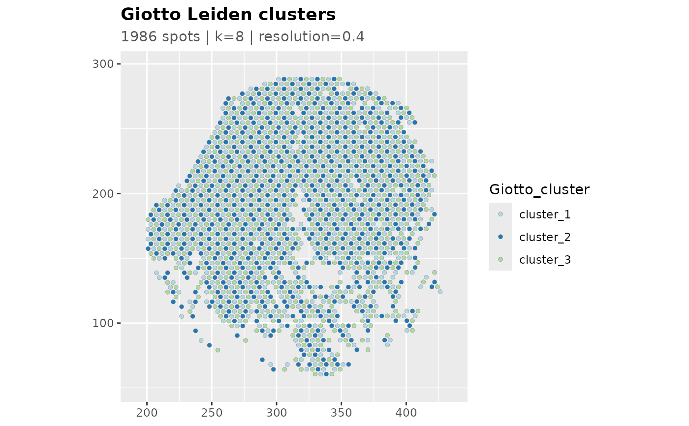
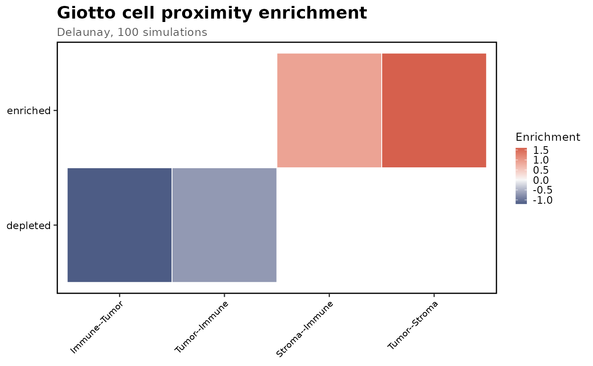
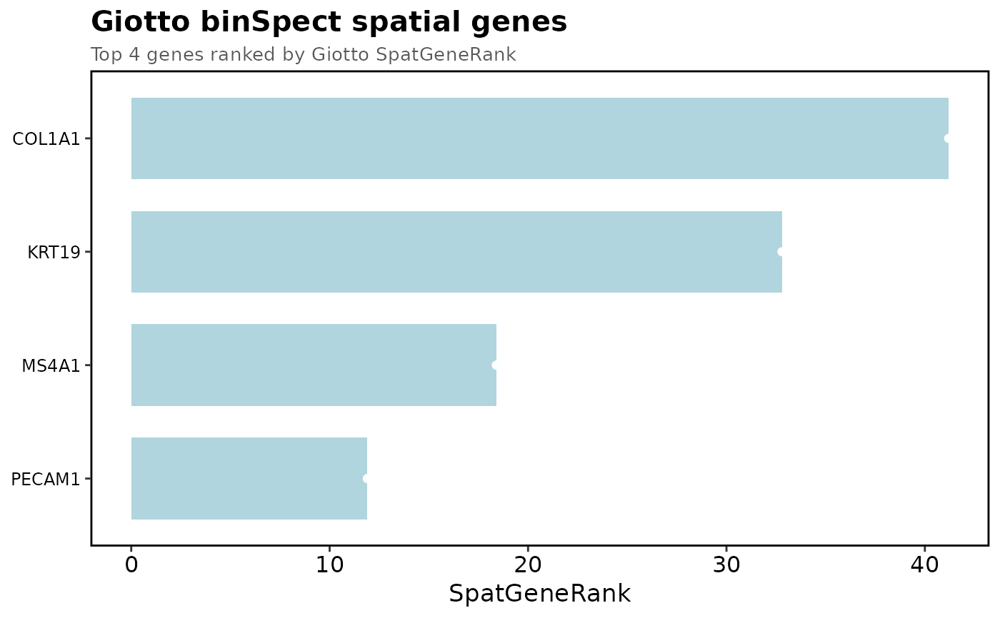
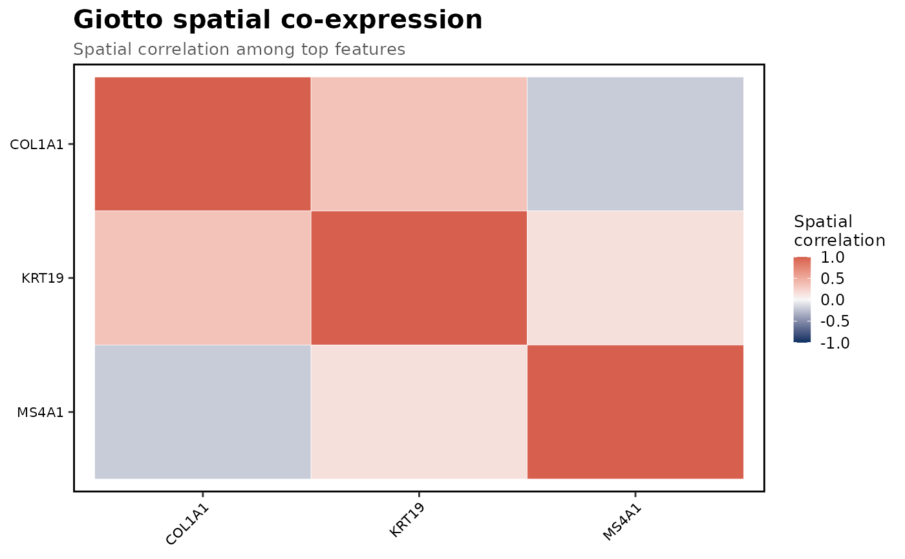

Plot standalone Giotto backend results with scop plotting conventions. The
input Seurat object, when supplied, is copied internally for plotting and
is not modified.
Usage
GiottoPlot(x, ...)
# S3 method for class 'giotto2_cluster'
GiottoPlot(
x,
srt,
image = x$parameters$image %||% NULL,
coord.cols = x$parameters$coord.cols %||% c("x", "y"),
overlay_image = TRUE,
crop = TRUE,
pt.size = NULL,
pt.alpha = 0.95,
stroke = 0.08,
palette = "Chinese",
feature_palette = "Spectral",
bg_color = "grey25",
legend.position = "right",
theme_use = "theme_blank",
theme_args = list(),
title = "Giotto Leiden clusters",
subtitle = NULL,
...
)
# S3 method for class 'giotto2_cell_proximity'
GiottoPlot(
x,
heatmap_palette = "RdBu",
heatmap_palcolor = NULL,
theme_use = "theme_scop",
theme_args = list(),
title = "Giotto cell proximity enrichment",
subtitle = NULL,
...
)
# S3 method for class 'giotto2_spatial_genes'
GiottoPlot(
x,
srt = NULL,
plot_type = c("ranking", "feature"),
feature = NULL,
top_n = 20,
assay = x$parameters$assay %||% NULL,
layer = x$parameters$layer %||% "data",
image = x$parameters$image %||% NULL,
coord.cols = x$parameters$coord.cols %||% c("x", "y"),
overlay_image = TRUE,
crop = TRUE,
pt.size = NULL,
pt.alpha = 0.95,
palette = "Chinese",
feature_palette = "Spectral",
heatmap_palette = "RdBu",
heatmap_palcolor = NULL,
legend.position = "right",
theme_use = "theme_scop",
theme_args = list(),
title = NULL,
subtitle = NULL,
...
)
# S3 method for class 'giotto2_spatial_modules'
GiottoPlot(
x,
features = NULL,
top_n = 20,
heatmap_palette = "RdBu",
heatmap_palcolor = NULL,
theme_use = "theme_scop",
theme_args = list(),
title = "Giotto spatial co-expression",
subtitle = "Spatial correlation among top features",
...
)Arguments
- x
A result returned by one of the
RunGiotto*()functions.- ...
Arguments passed to S3 methods.
- srt
Original `Seurat` object used to create the Giotto result. Required for spatial spot plots.
- image
Name of the Seurat spatial image. If `NULL`, the first image is used when available.
- coord.cols
Metadata coordinate columns used when no image is available.
- overlay_image
Whether to draw the spatial image beneath spots.
- crop
Whether to crop spatial panels to plotted spots.
- pt.size
Point size for spatial plots.
- pt.alpha
Point alpha for spatial plots.
- stroke
Point border width for discrete spatial plots.
- palette
Discrete palette used for groups.
- feature_palette
Continuous palette used for spatial expression plots.
- bg_color
Point border color for discrete spatial plots.
- legend.position
Legend position.
- theme_use
Theme function name used by scop plots.
- theme_args
Additional arguments passed to `theme_use`.
- title, subtitle
Plot title and subtitle. If `NULL`, sensible defaults are used.
- heatmap_palette
Continuous palette used for heatmaps.
- heatmap_palcolor
Optional custom colors used to create `heatmap_palette`.
- plot_type
Plot type for spatial gene results. `"ranking"` plots the feature-level table; `"feature"` plots expression of one feature on spatial coordinates.
- feature
Feature to draw for `plot_type = "feature"`. If `NULL`, the top Giotto feature is used.
- top_n
Number of rows shown in ranking plots.
- assay
Assay used for spatial feature expression plots.
- layer
Assay layer used for spatial feature expression plots.
- features
Features used for spatial co-expression heatmaps. If `NULL`, top features from the Giotto result are used.
Examples
data(visium_human_pancreas_sub)
spatial <- visium_human_pancreas_sub
cluster_result <- list(
clusters = data.frame(
cluster = paste0("cluster_", (seq_len(ncol(spatial)) - 1) %% 3 + 1),
row.names = colnames(spatial)
),
parameters = list(
cluster_colname = "Giotto_cluster",
coord.cols = c("x", "y"),
k = 8,
resolution = 0.4
)
)
class(cluster_result) <- c("giotto2_cluster", "giotto2_result", "list")
GiottoPlot(
cluster_result,
srt = spatial,
overlay_image = FALSE,
coord.cols = c("x", "y")
)

proximity <- list(
enrichment = data.frame(
group_1 = c("Tumor", "Tumor", "Stroma", "Immune"),
group_2 = c("Stroma", "Immune", "Immune", "Tumor"),
enrichment = c(1.6, -0.7, 0.9, -1.2),
type_int = c("enriched", "depleted", "enriched", "depleted")
),
parameters = list(network_method = "Delaunay", number_of_simulations = 100)
)
class(proximity) <- c("giotto2_cell_proximity", "giotto2_result", "list")
GiottoPlot(proximity)

spatial_genes <- list(
results = data.frame(
feat_ID = c("COL1A1", "KRT19", "MS4A1", "PECAM1"),
spatGeneRank = c(41.2, 32.8, 18.4, 11.9)
),
top_features = c("COL1A1", "KRT19", "MS4A1"),
parameters = list(assay = "Spatial", layer = "data")
)
class(spatial_genes) <- c("giotto2_spatial_genes", "giotto2_result", "list")
GiottoPlot(spatial_genes, plot_type = "ranking", top_n = 4)

modules <- list(
module_tables = list(
result.cor_DT = expand.grid(
feat_ID = c("COL1A1", "KRT19", "MS4A1"),
variable = c("COL1A1", "KRT19", "MS4A1")
)
),
features = c("COL1A1", "KRT19", "MS4A1")
)
modules$module_tables$result.cor_DT$spat_cor <- c(
1, 0.35, -0.20,
0.35, 1, 0.15,
-0.20, 0.15, 1
)
class(modules) <- c("giotto2_spatial_modules", "giotto2_result", "list")
GiottoPlot(modules, top_n = 3)
